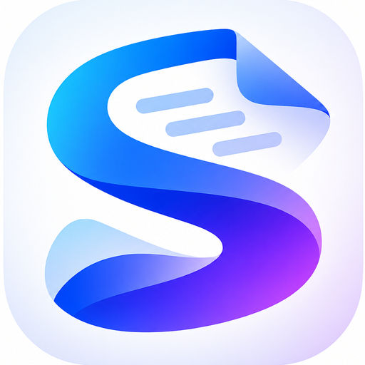

用真实 CSS 变量 + 真实组件尺寸复刻的对比稿。每块左侧是「现状」，右侧是「建议」。图片素材是您上传的 PNG 裁切版本（1536×1024 → 裁圆角方块 → 512×512）。

⚠️ 观察点：源图自带浅色底 + 柔和投影，缩到 24px 以下时「图标边界」几乎消失，在白顶栏上会显灰、发糊。所以建议 UI 徽标统一加 1px 描边（下面每个方案都给了带描边版本）。
本地版尺寸 28px（PWA 版为 24px）。朱砂与 UI 主色完全一致。
带 1px 描边版：图标边界清晰。顶栏其余部分（选中下划线、按钮色）仍是朱砂 → 就是「彩色图标 + 暖色 UI」的组合。
上＝现状，下＝建议。PWA 顶栏还有一行副标题，换图标后观感差异更明显。
小屏时启动条的文字会被隐藏，只剩左边这个 22px 方块 —— 它是首屏唯一的品牌露出，换成 logo 收益最大。
上＝现状（只有小圆点），下＝建议（16px 小徽标，替换圆点）。
有新版本可用
有新版本可用
上＝现状，下＝建议。也可选择不加（卡内已有版本徽标）。
上＝现状，下＝建议。这里是「系统更新」的主场景，加 logo 最自然。
公众号排版 + 小红书封面，纯本地运行…
建议加：关于页放 40px 大徽标，是品牌落位的收尾处。
maskable 图标要求「内容落在中心 80% 圆内」，否则安卓会裁掉边缘。左侧源图已自带留白，稍加内边距即可达标。
| 文件 | 尺寸 | 用途 | 现状 |
|---|---|---|---|
| icon-192.png | 192 | 安卓桌面图标 / 快捷方式 | 朱砂「版」 |
| icon-512.png | 512 | 高分屏桌面图标 | 朱砂「版」 |
| icon-512-maskable.png | 512 | 安卓圆形/异形裁切 | 朱砂「版」 |
| apple-touch-icon.png | 180 | iOS 添加到主屏 | 朱砂「版」 |
| favicon-32.png | 32 | 浏览器标签页（两版共用） | 朱砂「版」/ 内联 SVG |
这两个色系不同调：朱砂＝暖、纸感、中式；蓝紫＝冷、科技、数字。同屏出现时如果处理不好，会像「贴了一张别人的 logo」。
改了名称要同步三处：页面标题、PWA manifest 的 name、关于弹窗文案。
回一句「按推荐来」我就开工；也可以逐条改。开工后我会导出 5 张图标 + 两版接入，并跑本地有头套件（33/33）与 PWA 构建断言验证。